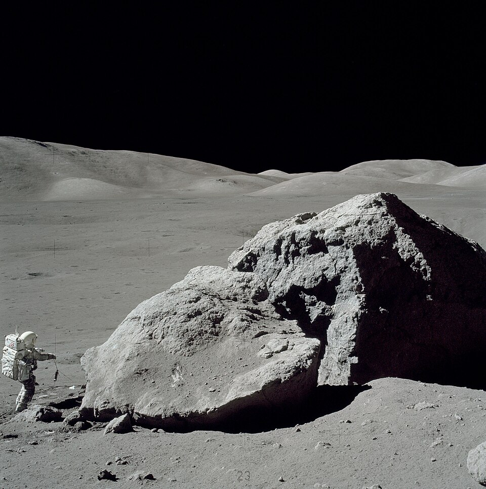
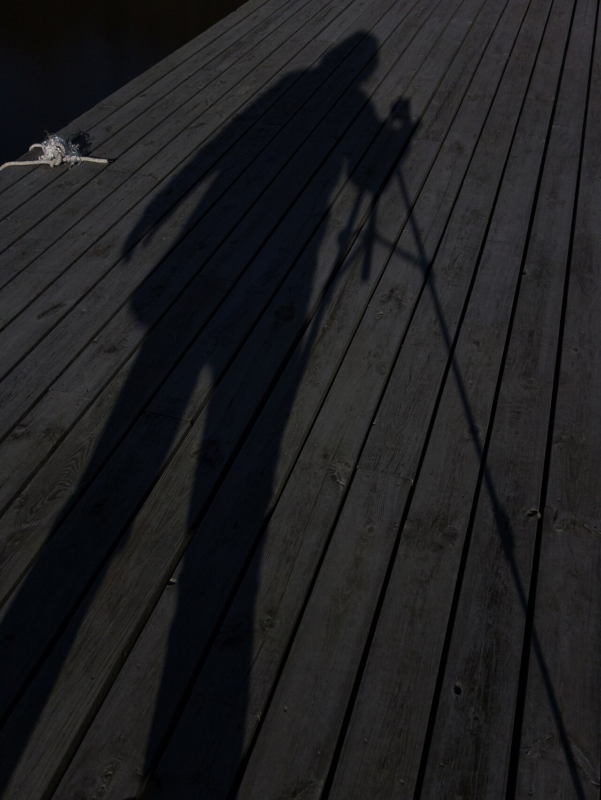

光線特勤隊・中秋特別任務
中秋月光之謎
中秋節晚上，
月亮亮到地上有影子。
月亮，是一盞燈嗎？
Mid-Autumn Moonlight Mystery
謎題
月亮會自己發光嗎？
先猜！指一指、舉手、或按按鈕（按一次＝一票）
✉️ 答案先封進「謎案信封」，找齊 3 個線索再打開！
線索 1｜暗房實驗
柚子，自己會亮嗎？
🍊 柚子＝假裝是月亮
🕯️ 蠟燭：自己會亮 → 光源光源 light source
🍊 柚子：要有光照到才看得見 → 光反射到眼睛反射 reflection
線索 1 ✅：不會自己亮的東西，要靠別人的光。
線索 2｜光源分類站
誰自己會發光？
拖曳照片（或：先點照片，再點框框）
☀️ 自己會發光光源
🌕 靠反射才看得到

真的月球表面：灰色石頭和沙
太空人登陸月球：
月亮是石頭，不是燈。
石頭把太陽光反射回來，
表面粗粗的，光往四面八方跑。漫反射
線索 2 ✅
線索 3｜月亮為什麼會變形？
拖動月亮，繞地球走一圈
🎯 任務：把月亮拖到「中秋節滿月」的位置！
👀 從地球抬頭看
滿月
☀️ 太陽永遠只照亮月亮的一半。
月亮繞著地球轉，我們看到亮的那一半「多或少」→ 形狀就變了。月相 phases公轉
線索 3 ✅：中秋 = 太陽 → 地球 → 月亮 排一直線，亮面整個朝向我們。
月光列車｜5 站闖關
🚂
打開謎案信封
月亮會自己發光嗎？
🌑 不會！月亮反射太陽光，
光走進我們的眼睛，才看得到月亮。
月亮不是光源；月亮的光 = 被反射的太陽光。

🎁 加碼：月光下也有影子！
月光也是光，
一樣走直線，
被身體擋住 → 影子。光的直進
（還記得任務一：光與影子嗎？）
🥮 中秋夜・觀月任務
- 🌕 和家人抬頭看月亮：圓圓的嗎？
- ✋ 用手比出月亮的形狀，拍一張照片
- 👣 找找看：月光下有沒有你的影子？
- ⚠️ 白天絕對不可以直接看太陽
照片：Full Moon © Gregory H. Revera, CC BY-SA 3.0；Apollo 17 Schmitt boulder、The Blue Marble（NASA，公有領域）；Moonlight shadow（CC0）；Pomelo fruit（Wikimedia Commons, CC BY-SA 4.0）；Like a candle flame（Flickr, CC BY 2.0）。皆取自 Wikimedia Commons。